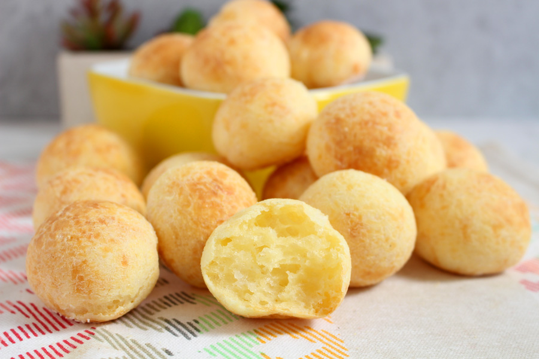

Description
Cheese Bread is an typical Brazilian snack. Customary to be served in breakfast or the afternoon tea.
Ingredients
- ½ cup olive oil or butter
- ⅓ cup water
- 1 teaspoon salt
- 2 cups tapioca flour
- 2 teaspoons minced garlic
- ⅔ cup freshly grated Parmesan cheese
- 2 beaten eggs
Steps
- Preheat oven to 375 degrees F (190 degrees C).
- Pour olive oil, water, milk, and salt into a large saucepan, and place over high heat. When the mixture comes to a boil, remove from heat immediately, and stir in tapioca flour and garlic until smooth. Set aside to rest for 10 to 15 minutes.
- Stir the cheese and egg into the tapioca mixture until well combined, the mixture will be chunky like cottage cheese. Drop rounded, 1/4 cup-sized balls of the mixture onto an ungreased baking sheet.
- Bake in preheated oven until the tops are lightly browned, 15 to 20 minutes.
Return to Top
Home Page